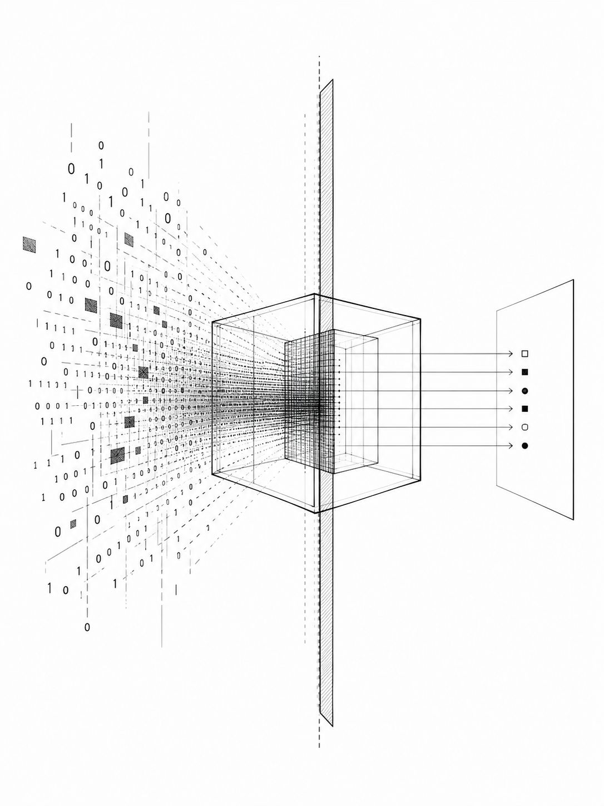
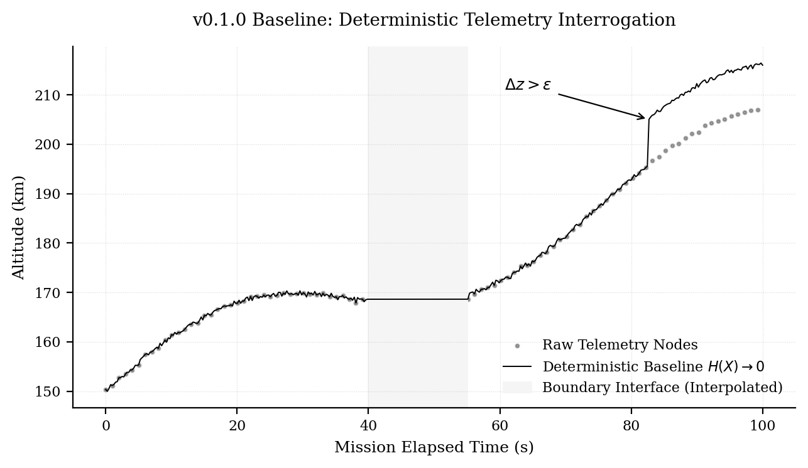

Cyber Audit
Rule-based repository checks for secret exposure, dependency drift, and risky environment-variable access.
Module notev0.1.0 baseline
Minimal instrumentation for reproducible software supply-chain review, telemetry validation, and cloud/API observability.

Rule-based repository checks for secret exposure, dependency drift, and risky environment-variable access.
Module noteAssumption-explicit cleaning for local telemetry records, interpolation, and abrupt signal-jump flags.
Module noteEndpoint probing for latency, payload size, status, success rate, and response fingerprint consistency.
Module noteminimum viable disclosure
The baseline favors deterministic outputs, JSON schemas, and test-log metrics over expansive raw telemetry. The result is a compact artifact that can be inspected, cited, and extended.

@software{lee_audit_probes_2026,
author = {Lee, L. S.},
title = {Audit Probes},
year = {2026},
version = {0.1.0},
license = {MIT},
url = {https://github.com/intelligentiaomni/audit-probes},
doi = {10.5281/zenodo.20269027}
}